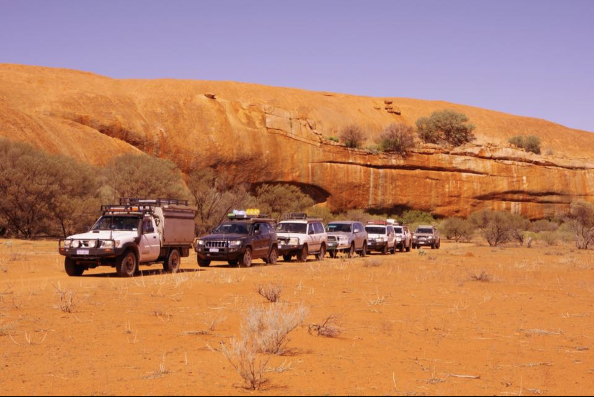
Out and About 4x4 Club Inc.
20 years old - not a hard core 4wd Club that seeks out the most difficult tracks to conquer, more about enjoying our four-wheel driving in a safe fun and responsible manner.
moreFour-wheel drive (4WD) tracks around Australia are consistently being closed to the public, with a large and growing population of Australian's and tourists alike being locked out of exploring the natural landscape.
Tracks experience closures when there is an increase in damage to the natural landscape, this includes;
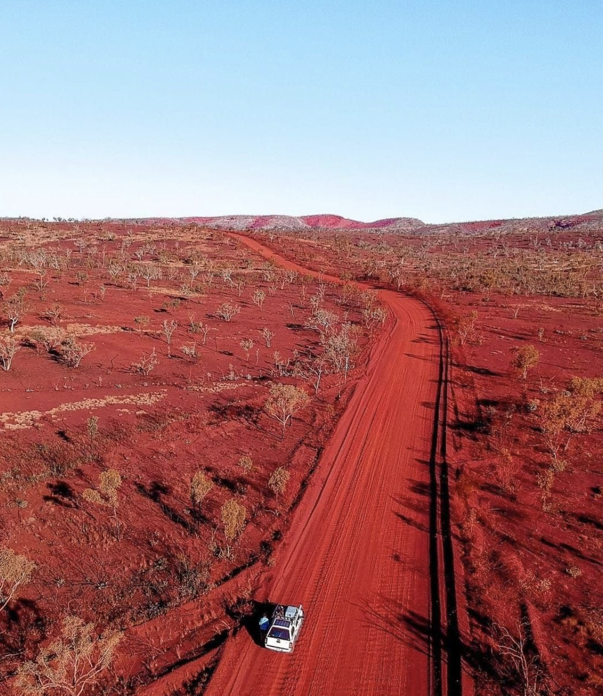
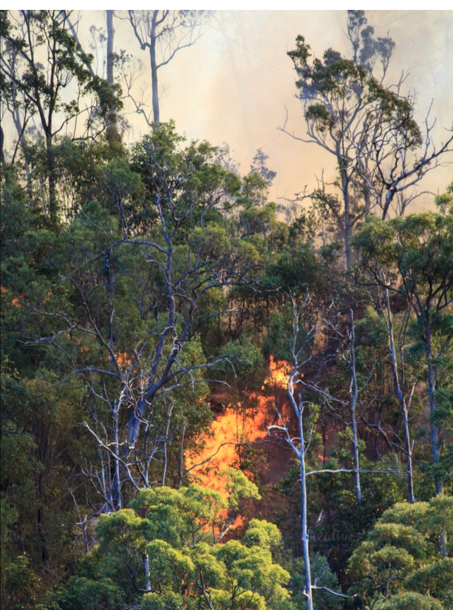
Eco-tourism experiences a large and negative impact when four-wheel driving tracks are closed to the public and to four-wheel driving activities as tourists often use these tracks to travel to scenic destinations that allow them to witness Australia's wildlife and its natural beauty. These closures result in a reduction in tourism activities in the area which in turn negatively impacts the local economy as tour operators and accommodation facilities experience a significant decrease in tourists, causing the area to develop higher levels of unemployment.
People who have been driving four-wheel drive tracks for over a decade can see their closure, even if the track is mostly made of rock like the Pipeline Track in Lithgow New South Wales. This type of track experiences minuscule changes and damages to it due to it being this type of terrain, which goes against the argument of four-wheel drive vehicles destroying the environment as there is a lack of evidence, particularly with this specific track. The Pipeline track is an integral part of many four-wheel drive enthusiast with Four Wheel Drive New South Wales & Australian Capital Territory, also known as 4WD NOW, being a key member from groups that use the area.
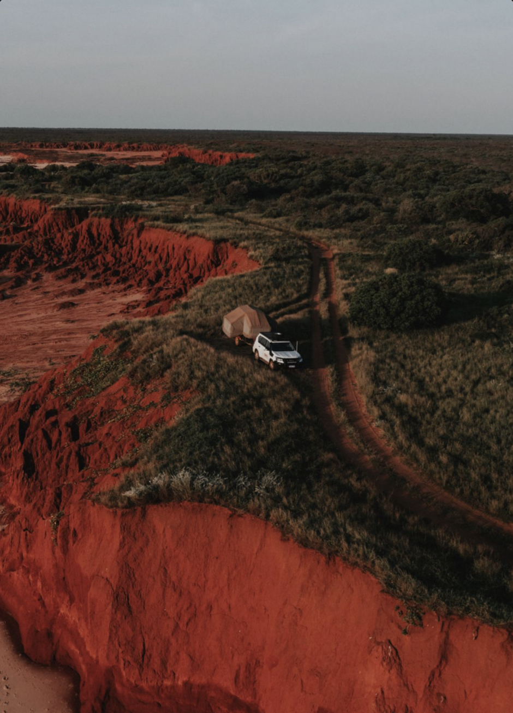
There are effective measures that can be taken to limit the damage of the over use of 4WD tracks.
There is a balance that can be achieved between conserving the environment and allowing the community of 4WD enthusiasts to participate in driving, camping and that particular lifestyle.
Visitors are required to obtains a permit before entering the area, which is also effective in limiting the number of vehicles on a track at one time. Permit systems help to keep people accountable of damage through the limited number of people and vehicles permitted to go through during specific dates, with rangers and authorities patrolling the area and capable of tracking down who is in the area at any particular time.
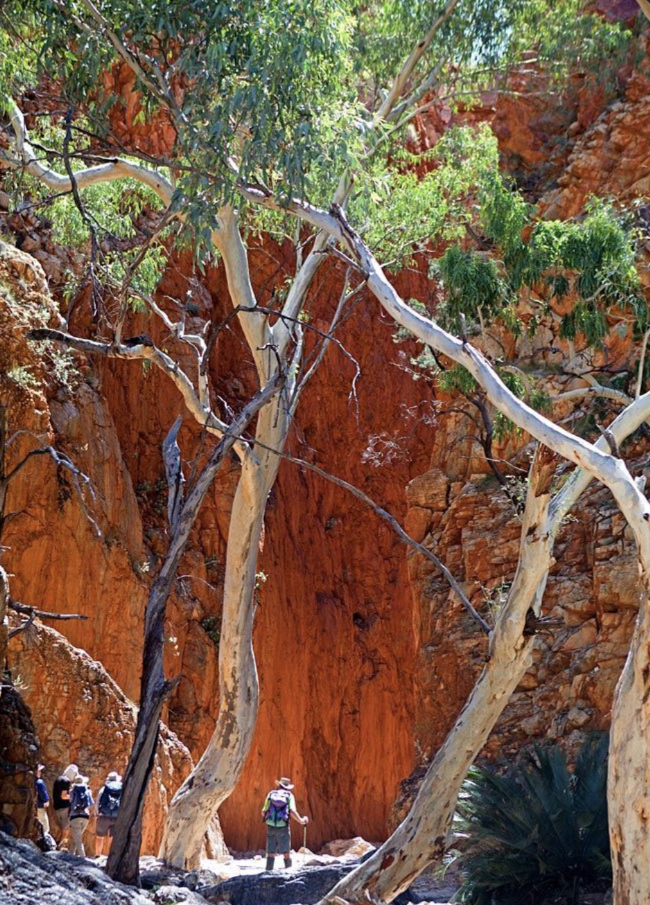
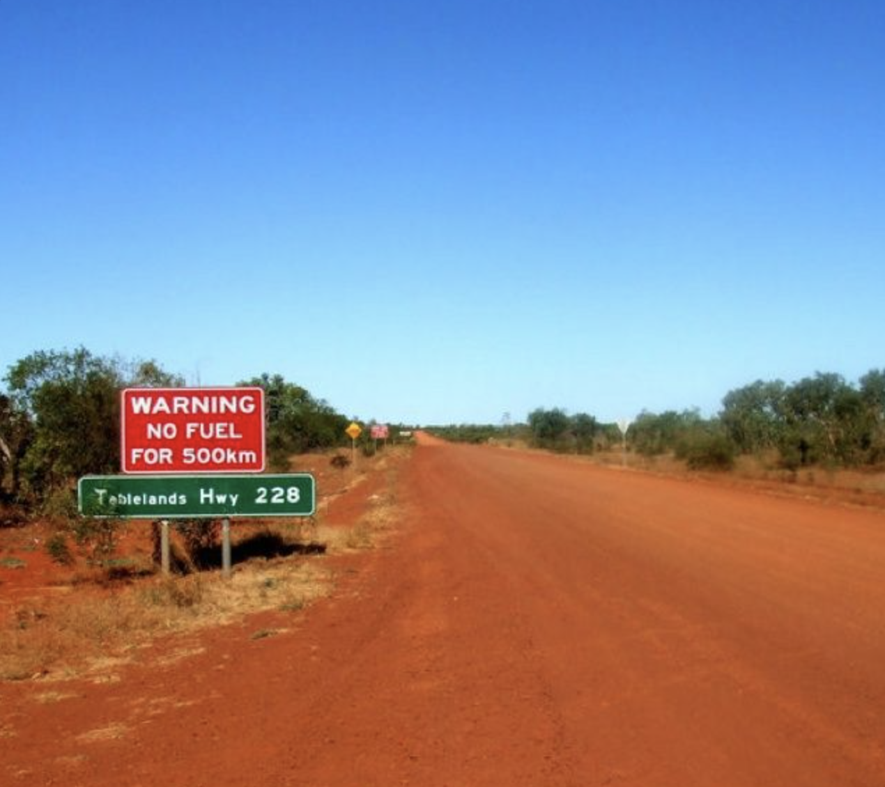
Improved track infrastructure includes;
These methods of reducing the impact of vehicles on the environment are effective in both allowing visitors to see the sights and wonders of the Australian bush, improving the local economy and Eco-tourism, as well as protecting the environment the surrounds the 4WD track.
The state of Victoria manage their 4WD tracks through seasonal closures and regular maintenance allowing 4WDers to drive the tracks in the correct season and closing the tracks during the winter months.
Tracks are more prone to vehicles damaging the ground in winter months due to the increased mud and water puddles that increase the difficulty of the track and the likelihood of vehicles becoming stuck.
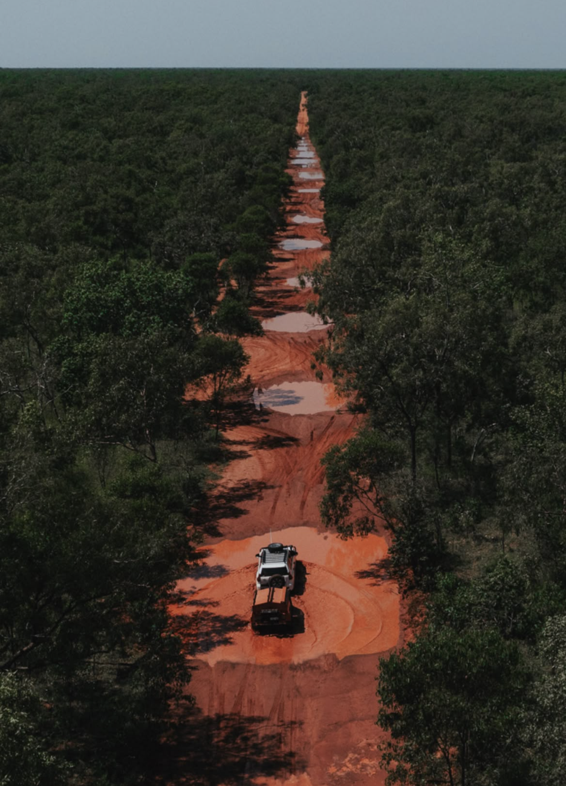
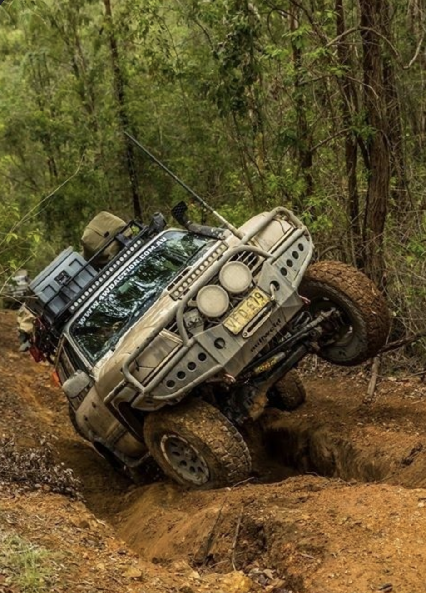
The track begins with a purposefully challenging obstacle designed to stop vehicles and drivers without enough off-road experience or capability from entering. This ensures that only properly equipped and skilled 4WDs will go ahead, reducing the chances of a vehicle getting stuck or causing accidents further along the track
Cameras can be installed to record who comes in and out of tracks, as well as record perpitrators of littering, irresponsible driving, wood harvesting, illegally camping etc., in order to fine them. Rangers can patrol the tracks, their entrances, and exits during busier times of the year to hand out on-the-spot fines and to deter visitors from doing the wrong thing.
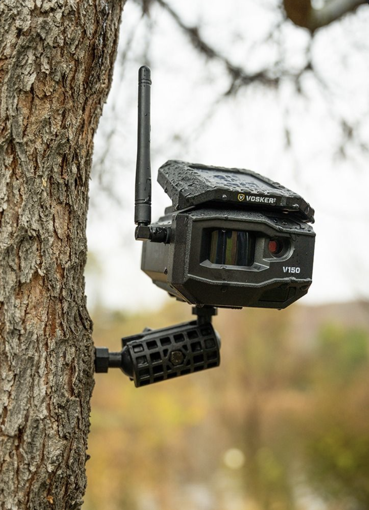
The public can participate in easy and basic ways of taking care of four-wheel drive tracks through collecting their own and any waste on the site, taking care of tracks through responsible and careful driving, and coming together as a community to keep tracks clean, tidy and prevent their damage.
Bring rubbish bags to keep your rubbish in, and bring an extra one to collect other rubbish you see around.
Leave the area better than you found it.
Leave no trace.
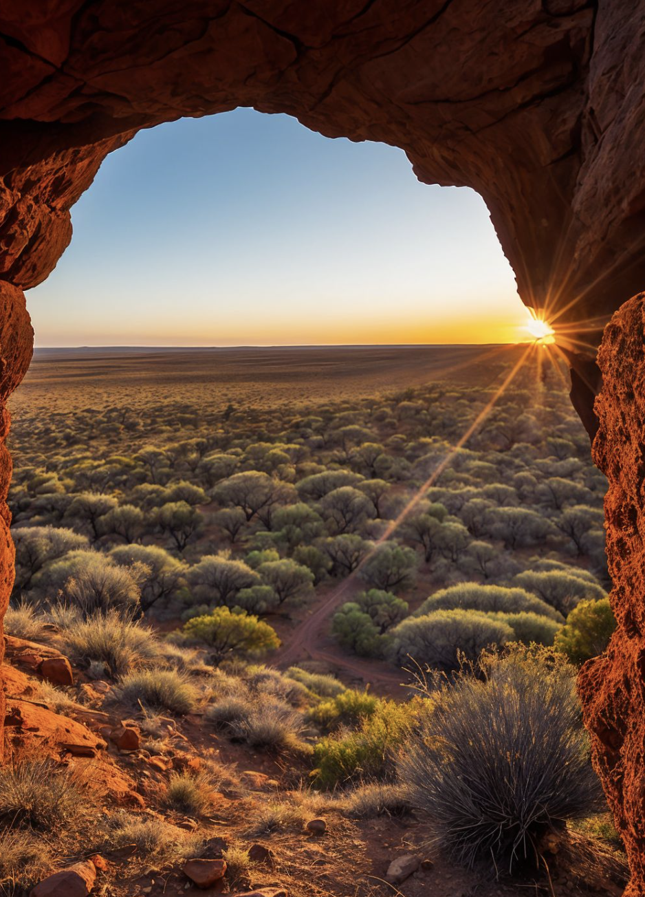
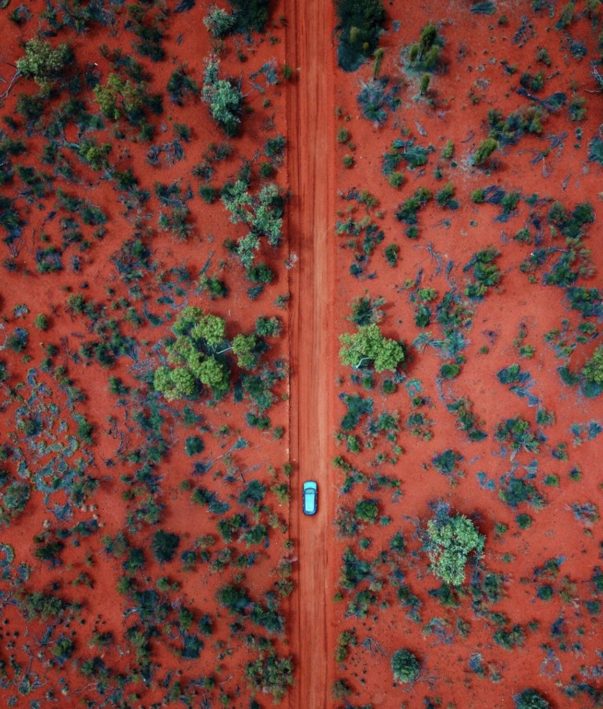
Follow the tracks already clearly made and do not veer off for any reason (unless it's an emergency of course).
You help the environment and wildlife by sticking to tracks by maintaining fire breaks and allowing the surrounding vegetation to thrive.
If you see your mates (or anyone else) driving irresponsibly, littering, veering off track or doing anything other damaging activities - call them out!
Whether they just don't know the impact or if they dont care, the only way we can fight the closure of tracks is by doing it together and holding each other accountable.
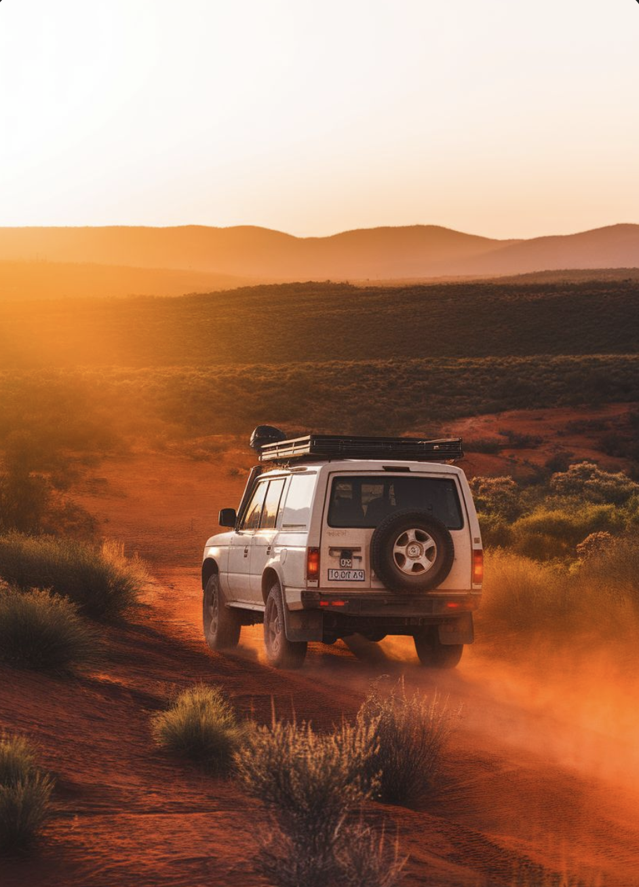
Freedom does not mean free access, whether it's private property (like a farm or station), Crown Land or
National Parks/State Forrests you must check the rules for that specific location. Often this means obtaining an official
permit or pre-booking a designated spot.
When travelling in the Outback remember you are travelling through the ancestral
Country of the Traditional Owners. Proactively seek their guidance and permission before entering in order to be respectful and
follow best practices
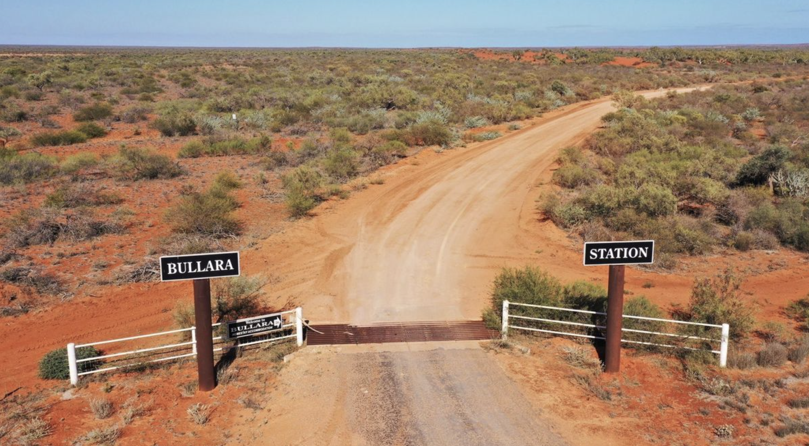
Always put you campfire out with water, DO NOT bury your embers as they often continue to burn but now covered in dirt or sand. The next family that camps in that spot may have a little one that discovers the extremely damaging burning coals with their bare feet. It happens and it's very distressing - please put your fires out with water.
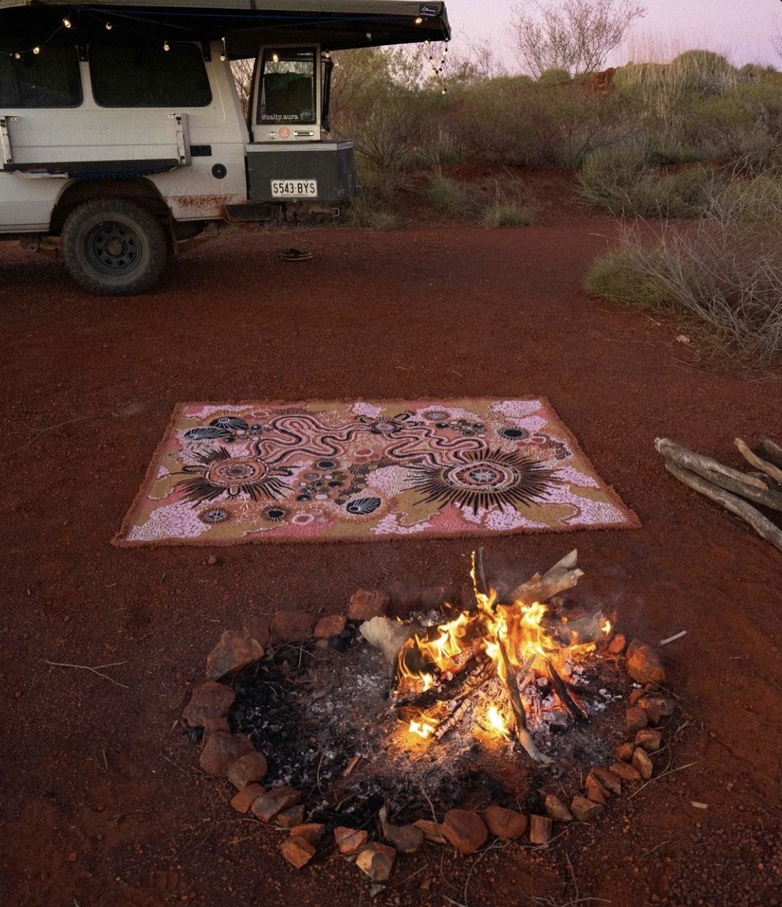
Whether you're new to the scene or a dinosaur, there are plenty of clubs to join around Australia.
Joining a club has many benefits! Each club throw their own special events, have different accessibility perks, vary in social scene, and more (some even have car exclusivity!) - there's a club for every kind of 4WD enthusiast.

20 years old - not a hard core 4wd Club that seeks out the most difficult tracks to conquer, more about enjoying our four-wheel driving in a safe fun and responsible manner.
more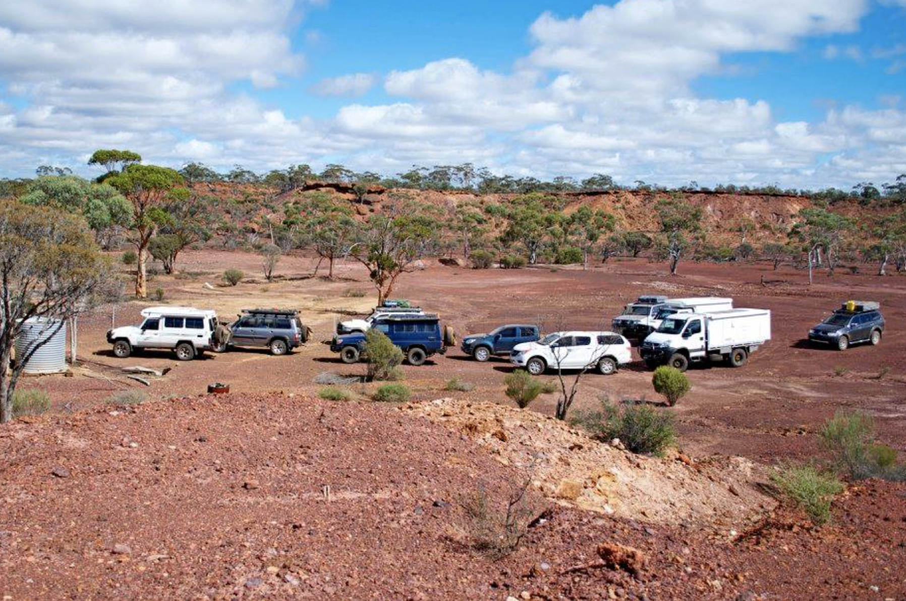
Social Facebook group posting 4WD news, organizing trips for members and promoting good 4WD practices.
morePARAGRAPH ABOUT THE CLUB
morePARAGRAPH ABOUT CLUB
more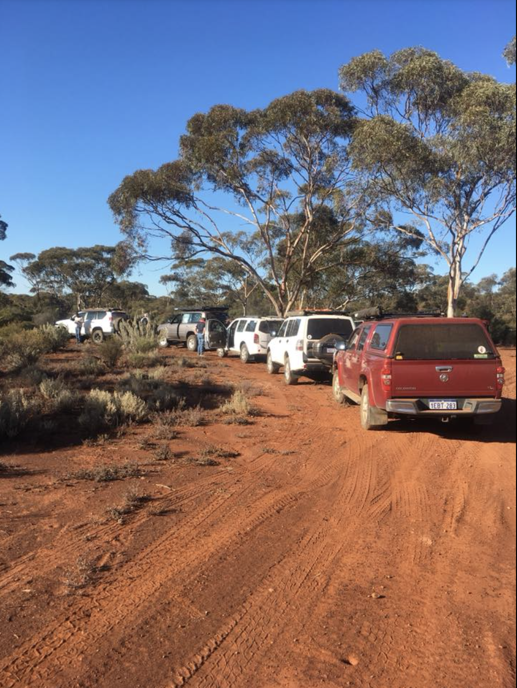
Established in 2012 by three friends from the love of the outdoors and nature, the club is inclusive of AWD and 4WD vehicles and participates in varying activities.
more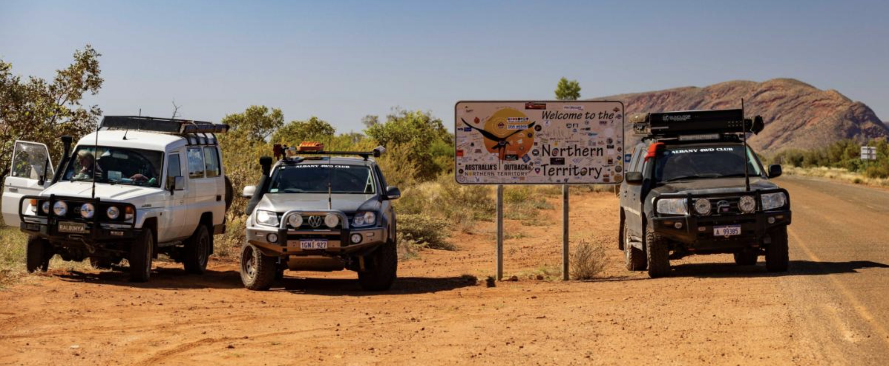
Caters to all types of 4WDs and skill levels with organized training days and trips - insured and affiliated with WA 4WD Association.
moreWith such a large population in this hobby there are bound to be a few bad actors, but with good ones (like you!) we can change the tide on the closure of 4WD tracks and some of the negative opinions that have been formed.
There's plenty to learn if you're just starting out and even if you think you might be an expert, that's all part of the beauty and charm of the scene.